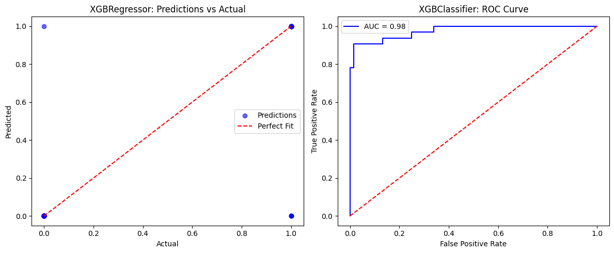

Performance metrics#
XGBRegressor#
Regression predicts continuous outputs. Evaluation focuses on error magnitude, variance explained, and correlation between predicted vs actual.
Mean Squared Error (MSE)
Penalizes larger errors heavily (quadratic).
Lower is better.
Often used as the default loss in XGBRegressor.
Root Mean Squared Error (RMSE)
Same as MSE but in original target units.
Easier to interpret when target values are meaningful (e.g., prices, temperatures).
Mean Absolute Error (MAE)
More robust to outliers than MSE.
Measures average magnitude of errors.
R-squared (Coefficient of Determination, \(R^2\))
Measures variance explained by the model.
\(R^2=1\): perfect fit, \(R^2=0\): baseline (mean-only), negative: worse than baseline.
Mean Absolute Percentage Error (MAPE)
Expresses error in percentage terms.
Sensitive to zero or very small \(y_i\).
XGBClassifier#
Classification predicts discrete labels. Metrics depend on binary vs multiclass.
Binary classification#
Accuracy
Simple but can be misleading on imbalanced datasets.
Precision
Of predicted positives, how many are correct?
High precision means fewer false alarms.
Recall (Sensitivity, TPR)
Of actual positives, how many did we catch?
High recall means fewer misses.
F1 Score
Harmonic mean of precision and recall.
Useful when classes are imbalanced.
AUC-ROC (Area Under ROC Curve)
ROC: plots True Positive Rate vs False Positive Rate at all thresholds.
AUC close to 1 → strong separation between classes.
Threshold-independent.
Log Loss (Cross-Entropy Loss)
Measures probability calibration.
Strong penalty for confident wrong predictions.
Multiclass classification#
Accuracy (same as binary).
Log Loss (generalized to multiclass softmax).
Macro / Micro Precision, Recall, F1
Macro: unweighted mean across classes.
Micro: aggregates over all instances.
Cohen’s Kappa – agreement measure, adjusts for chance.
AUC-ROC (One-vs-Rest) for multiclass.
Summary:
For XGBRegressor, common metrics = MSE, RMSE, MAE, R².
For XGBClassifier, common metrics = Accuracy, Precision, Recall, F1, AUC, Log Loss.
Choice depends on business goals: do you want to minimize error magnitude, maximize variance explained, reduce false negatives, or improve probability calibration?
# ------------------------------
# XGBoost Regressor & Classifier
# Performance Metrics Demonstration
# ------------------------------
import numpy as np
import matplotlib.pyplot as plt
from sklearn.datasets import make_regression, make_classification
from sklearn.model_selection import train_test_split
from sklearn.metrics import (
mean_squared_error, mean_absolute_error, r2_score,
accuracy_score, precision_score, recall_score, f1_score,
roc_auc_score, log_loss
)
from xgboost import XGBRegressor, XGBClassifier
import warnings
warnings.filterwarnings("ignore")
# ============================
# Part 1: Regression
# ============================
print("\n--- XGBRegressor Evaluation ---")
# 1. Create regression dataset
X_reg, y_reg = make_regression(n_samples=500, n_features=10, noise=20, random_state=42)
# Train/test split
X_train, X_test, y_train, y_test = train_test_split(X_reg, y_reg, test_size=0.2, random_state=42)
# 2. Train XGBRegressor
reg_model = XGBRegressor(n_estimators=200, learning_rate=0.1, max_depth=4, random_state=42)
reg_model.fit(X_train, y_train)
# 3. Predictions
y_pred = reg_model.predict(X_test)
# 4. Metrics
mse = mean_squared_error(y_test, y_pred)
rmse = np.sqrt(mse)
mae = mean_absolute_error(y_test, y_pred)
r2 = r2_score(y_test, y_pred)
print(f"MSE: {mse:.2f}")
print(f"RMSE: {rmse:.2f}")
print(f"MAE: {mae:.2f}")
print(f"R²: {r2:.2f}")
# ============================
# Part 2: Classification
# ============================
print("\n--- XGBClassifier Evaluation ---")
# 1. Create classification dataset (binary)
X_clf, y_clf = make_classification(
n_samples=500, n_features=10, n_informative=5,
n_redundant=2, n_classes=2, weights=[0.7, 0.3], random_state=42
)
# Train/test split
X_train, X_test, y_train, y_test = train_test_split(X_clf, y_clf, test_size=0.2, random_state=42)
# 2. Train XGBClassifier
clf_model = XGBClassifier(n_estimators=200, learning_rate=0.1, max_depth=4, use_label_encoder=False, eval_metric="logloss", random_state=42)
clf_model.fit(X_train, y_train)
# 3. Predictions
y_pred = clf_model.predict(X_test)
y_proba = clf_model.predict_proba(X_test)[:,1] # probability for positive class
# 4. Metrics
acc = accuracy_score(y_test, y_pred)
prec = precision_score(y_test, y_pred)
rec = recall_score(y_test, y_pred)
f1 = f1_score(y_test, y_pred)
auc = roc_auc_score(y_test, y_proba)
logloss = log_loss(y_test, y_proba)
print(f"Accuracy: {acc:.2f}")
print(f"Precision: {prec:.2f}")
print(f"Recall: {rec:.2f}")
print(f"F1 Score: {f1:.2f}")
print(f"AUC-ROC: {auc:.2f}")
print(f"Log Loss: {logloss:.2f}")
# ============================
# Visualization: Regression Predictions
# ============================
plt.figure(figsize=(12,5))
# Regression actual vs predicted
plt.subplot(1,2,1)
plt.scatter(y_test, y_pred, alpha=0.6, color="blue", label="Predictions")
plt.plot([y_test.min(), y_test.max()], [y_test.min(), y_test.max()], "r--", label="Perfect Fit")
plt.xlabel("Actual")
plt.ylabel("Predicted")
plt.title("XGBRegressor: Predictions vs Actual")
plt.legend()
# Classification ROC Curve
from sklearn.metrics import roc_curve
fpr, tpr, _ = roc_curve(y_test, y_proba)
plt.subplot(1,2,2)
plt.plot(fpr, tpr, color="blue", label=f"AUC = {auc:.2f}")
plt.plot([0,1],[0,1],"r--")
plt.xlabel("False Positive Rate")
plt.ylabel("True Positive Rate")
plt.title("XGBClassifier: ROC Curve")
plt.legend()
plt.tight_layout()
plt.show()
--- XGBRegressor Evaluation ---
MSE: 2723.75
RMSE: 52.19
MAE: 41.34
R²: 0.86
--- XGBClassifier Evaluation ---
Accuracy: 0.95
Precision: 0.97
Recall: 0.88
F1 Score: 0.92
AUC-ROC: 0.98
Log Loss: 0.20
